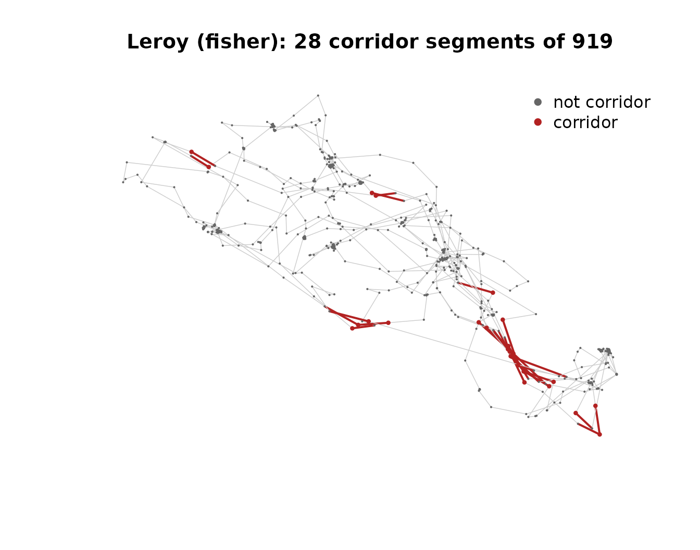

mt_corridor() identifies segments of a track where the
animal was moving quickly in a spatially consistent direction. It is a
port of the legacy move::corridor() function (LaPoint et
al. 2013) to the modern move2 / sf stack — the
concept is unchanged.
When to use corridor detection
The typical context is a migratory or commuting animal that travels between two (or several) regions via recognisable routes. Within those routes, successive segments point the same way and are traversed at speed; elsewhere on the track the animal forages or rests at slow, directionally inconsistent speeds. Corridor detection asks: which segments of the track belong to the route, and which belong to the foraging / resting stretches at each end?
The algorithm in one paragraph
For each segment i of the track, compute its speed and
azimuth. Build a search circle centred at the segment midpoint with
radius equal to half the segment length. Collect all other segment
midpoints inside that circle. Compute the circular variance of
pseudo-azimuths ((2 * azimuth) mod 2π, on
azimuths in radians) within the neighbourhood — the doubling is what
lets two animals walking the same corridor in opposite directions count
as consistent. A segment is flagged corridor if (a) its speed is at
least speed_threshold, (b) its neighbourhood’s circular
variance is at most circvar_threshold, and (c) the
neighbourhood contains at least min_segments qualifying
neighbours, which must outnumber the non-qualifying ones.
Coordinate reference system
The function works in any CRS: longitude/latitude or projected.
Longlat input is reprojected internally to a local azimuthal-equidistant
projection (via move2::mt_aeqd_crs()) just for the
buffer-and-index step; the result is added back to the input in its
original CRS. Multi-track input is handled track-by-track natively, via
move2::mt_segments() — no cross-track segments are ever
created.
Thresholds
Both speed_threshold (m/s) and
circvar_threshold (dimensionless, in [0, 1])
are user-supplied numbers. If you leave them as NULL the
function falls back to within-object quantiles (0.75 of segment speeds;
0.25 of valid circular variances) and warns, naming the
resolved numeric. The warning is intentional: a within-object quantile
defines “fast” and “directionally consistent” relative to this
animal, which is convenient for single-track exploration but makes
corridor maps from different individuals incomparable.
For comparable corridors across individuals or populations, compute the thresholds once on the pooled cohort and pass them as numbers.
Single-individual exploration
library(move2)
library(sf)
library(move2utils)
fishers <- mt_read(mt_example())
## drop empty geometries up front; mt_corridor() would otherwise emit
## a one-line inform notice and NA-pad them in the output, but several
## downstream sf/move2 calls in this vignette (e.g. mt_segments() for
## plotting) require non-empty points throughout.
fishers <- fishers[!st_is_empty(fishers), ]
leroy <- filter_track_data(fishers, .track_id = "M1")
st_crs(leroy)$input
#> [1] "EPSG:4326"
## defaults: within-object quantile fallback fires for both thresholds
out <- mt_corridor(leroy)
#> Warning: `speed_threshold` not supplied; using within-object 0.75 quantile of
#> segment speed = 0.2813 m/s. For cross-individual or cross-population
#> comparability, supply an explicit value.
#> Warning: `circvar_threshold` not supplied; using within-object 0.25 quantile of
#> valid circular variance = 0.2855. For cross-individual or cross-population
#> comparability, supply an explicit value.
table(out$corridor)
#>
#> corridor not corridor
#> 28 891Five columns are added to the input move2 (each of
length nrow(leroy)):
-
corridor— factor with levels"corridor"and"not corridor". -
corridor_speed— per-segment speed (m/s);NAat the last row of each track and at any row that started empty. -
corridor_azimuth— per-segment azimuth (degrees);NAlikewise. -
corridor_circvar— circular variance of pseudo-azimuths within the segment’s neighbourhood;NAfor neighbourhoods of size < 2. -
corridor_n_neighbours— number of segments found within the search radius.
A quick map
corr <- as.character(out$corridor)
out$segments <- mt_segments(out)
plot(out$segments,
col = c("firebrick", "grey80")[as.factor(out$corridor)],
lwd = c(2, 0.7)[as.factor(out$corridor)],
asp = 1,
main = sprintf("Leroy (fisher): %d corridor segments of %d",
sum(corr == "corridor"), length(corr)))
points(out,
col = c("firebrick", "grey40")[as.factor(out$corridor)],
pch = 16,
cex = c(0.6, 0.3)[as.factor(out$corridor)])
legend("topright", pch = 16, col = c("grey40", "firebrick"),
legend = c("not corridor", "corridor"), bty = "n")
Leroy’s track with the minority of segments that meet the corridor criteria highlighted in firebrick. Most of the track — slower, tightly looping foraging movement — stays grey.
Tightening the thresholds makes the detector more conservative — only the fastest, most directionally consistent portions qualify.
Multi-individual: explicit thresholds for comparability
When you want comparable corridor flags across individuals, compute the speed threshold once on the pooled cohort and reuse it. Below, the function is fed the whole multi-track fisher dataset directly; each track is processed independently for segments and neighbourhoods but every track is judged against the same speed cut-off.
## one pooled speed cut-off, reused per individual
all_speeds <- as.numeric(mt_speed(fishers, units = "m/s"))
speed_cut <- stats::quantile(all_speeds, 0.75, na.rm = TRUE)
out_all <- mt_corridor(
fishers,
speed_threshold = speed_cut,
circvar_threshold = 0.2 # fixed value; pick from the data or theory
)
#> Warning: Sampling interval is highly irregular (IQR / median = 2.2). The
#> half-segment-length search radius assumes roughly uniform sampling; corridor
#> flags on very short or very long segments may be misleading.
table(mt_track_id(out_all), out_all$corridor)
#>
#> corridor not corridor
#> F1 3 1346
#> F2 33 2971
#> F3 1 1500
#> M1 10 909
#> M2 9 1629
#> M3 49 2387
#> M4 90 8868
#> M5 61 13038The same threshold for speed_threshold and
circvar_threshold is now applied to each individual — so
the corridor column means the same thing in track M1 and
track M2.
Tuning
| Argument | Default | What to tune it for |
|---|---|---|
speed_threshold |
NULL (→ within-object 0.75 quantile, warn) |
Per-segment speed in m/s. Supply a number to make corridor flags comparable across animals; raise for stricter speed cut-off. |
circvar_threshold |
NULL (→ within-object 0.25 quantile, warn) |
Per-neighbourhood circular variance in [0, 1]. Lower
for tighter directional consistency; raise if the corridor genuinely
winds. |
min_segments |
2 | Minimum neighbourhood support. Raise if you want only well-populated corridor stretches. |
verbose |
FALSE |
Set to TRUE to print a one-line summary of how many
segments were flagged. The default-threshold, irregular-sampling, and
empty-geometry notices are shown regardless. |
Further reading
- LaPoint, S., Gallery, P., Wikelski, M., & Kays, R. (2013). Animal behavior, cost-based corridor models, and real corridors. Landscape Ecology, 28, 1615–1630. https://doi.org/10.1007/s10980-013-9910-0
-
?mt_corridorfor the full argument reference.